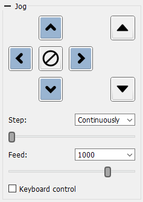

The Jog panel contains controls for moving the CNC tool:
The Step and Feed lists provide predefined values but allow entry of arbitrary numbers.
Values entered right before Keyboard Control is enabled are remembered and can be reused on subsequent program launches.
Each button, as well as changing the Step and Feed values, may have hotkeys defined in the program’s Settings window. Keyboard control must be turned on for these shortcuts to work.